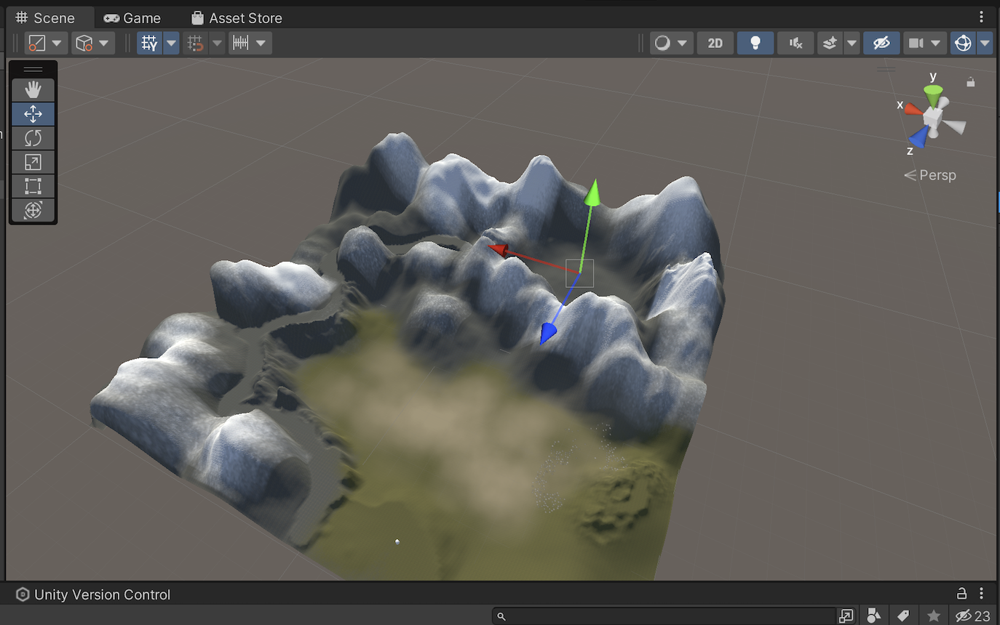
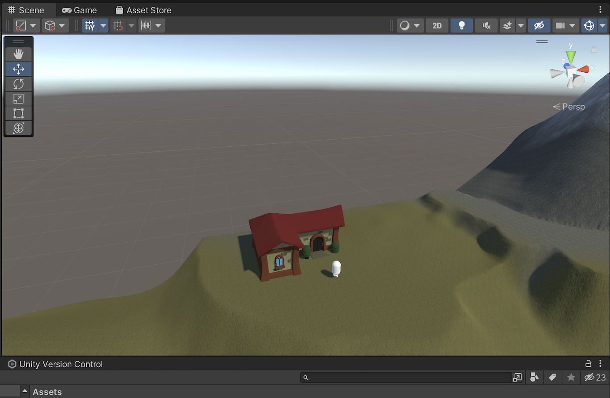
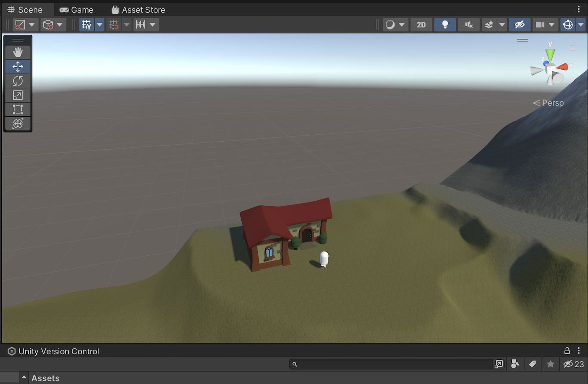
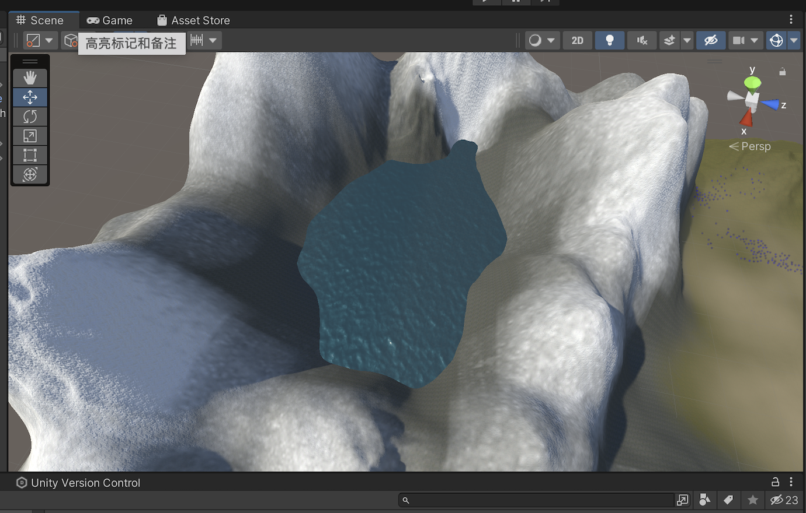
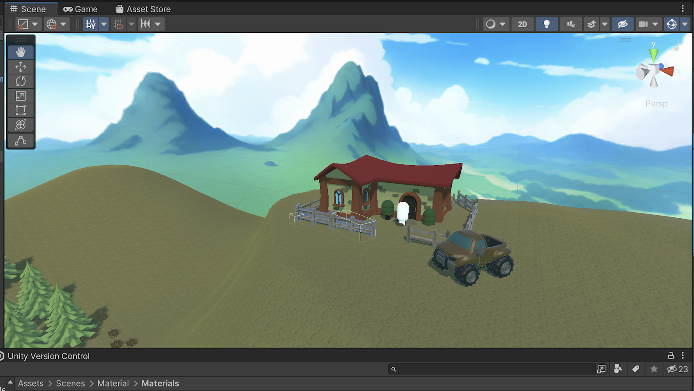

Project Brief
Start by sketching out your possibilities for your dream spaces: what kind environment it will be, which objects it will contain, what would be the layout etc. Consider the interactive possibilities in the space and how would you like to structure the experience.
Concept Development
I chose my hometown as the theme. Changbai Mountain is the most famous holy mountain in my hometown. I've been looking forward to living at the foot of the mountain since I was a child.
Step 1: First Model
I built a simple model with colors to differentiate the different sections
Depressed areas need to be filled with water. At the same time I used the smoothing brush to make the mountain paths, and the plains where the house is placed.
Step 2: House and Life
My childhood dream was to have a little house of my own among the fields. So I placed plants and wheat fields in the clearing.
 

Step 3: Environment
The presence of the environment makes the model more realistic. I used plugins and HDRi to add backgrounds and water to my modeling.
 